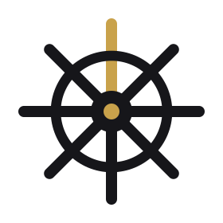

Connect
Connect your Channels and existing Agents through a single control plane.

SteeringFlowSteeringFlow is an Agent Control Plane for connecting, routing, and coordinating your Agent Network. Bring the Agents you already have — without rebuilding them.
Your Agents already contain the intelligence and business logic. SteeringFlow provides the control layer around them: connection, routing, coordination, and observability.
Start with one Agent and one Channel. Add more as your network grows.
Connect your Channels and existing Agents through a single control plane.
Route each request through the right Agent connection.
Create a foundation for coordination as your network grows.
Observe interactions and create a foundation for policies and governance.
Connect a WorkBuddy Agent to WeCom through SteeringFlow and get to a first successful interaction quickly.
Use the Agent Runtime interface to connect an Agent you already built and keep its internal state under your control.
No changes to the Channels your users already use.
A hosted path for teams that want to connect Agents and Channels without running the control-plane infrastructure themselves.
Request Cloud Early Access →SteeringFlow is designed to be self-hosted. Explore the code, run it locally, and build your own integrations.
Explore the repository →